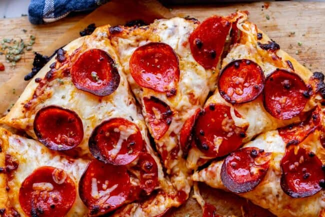

HOME-MADE PIZZA

how to make it?
The best part about pizza is that it is actually pretty quick if you have everything ready to go. I’m going to share my exact method for baking pizza that I have been using for about 10 years now. It’s tried and tested, and results in delicious, crispy-edged, perfectly cheesy pizza every time.
ingredients
- flour
- sausage
- cheese
- veggies of choice
- ketchup
steps
- Make the pizza dough: Follow the Best Pizza Dough recipe to prepare the dough. (This takes about 15 minutes to make and 45 minutes to rest.)
- Prepare the toppings: Slice or tear the fresh mozzarella into small pieces.
- Bake the pizza: When the oven is ready, dust a pizza peel with cornmeal or semolina flour. (If you don’t have a pizza peel, you can use a rimless baking sheet or the back of a rimmed baking sheet.
- Spread the pizza sauce over the dough using the back of a spoon to create a thin layer. Add the pieces of fresh mozzarella cheese evenly across the dough, then top with the shredded mozzarella cheese. Sprinkle evenly with the garlic powder, dried oregano, and a few pinches of kosher salt.
- Use the pizza peel to carefully transfer the pizza onto the preheated pizza stone. Bake the pizza until the cheese and crust are nicely browned, about 5 to 7 minutes in the oven (or 1 minute in a pizza oven). Slice into pieces and serve immediately.